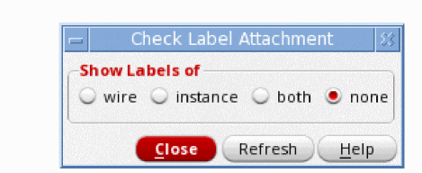

10
Checking Designs
This chapter describes the procedures you use for checking your design.
- Features of the Check Commands
- Setting the Check Options
- Creating Custom Checks
- Checking a Design
- Bypassing Checks
- Resolving Check Errors
Features of the Check Commands
Before you can pass the design data to any other tools, you must check your design for connectivity, errors, and rule violations.
The Cadence netlisters cannot generate the netlist until you check your design and, if necessary, correct any errors found during the check process.
You do not need to correct any warnings found during the check process, but you must review them before you attempt to generate a netlist.
The check commands are as follows:
- File – Check and Save
- Check – Current Cellview
- Check – Hierarchy
- Check – Label Attachment
- Check – CrossView
You can check schematics using the following commands.
-
The File – Check and Save command runs most of the check commands simultaneously, and
- Checks either a schematic or a symbol cellview
-
Extracts connectivity information from the graphics in the schematicWhen using the schematic editor as part of a Layout XL session, the Layout XL binder engine is reinitialized to take account of any changes in connectivity. This can create new bindings between schematic and layout components. For details see Device Correspondence in the Virtuoso Layout Suite XL User Guide.
- Runs specified options using the schematic rules checker (SRC), such as logical and physical checks
- Runs the cross-view checker (VIC) on views you can specify
- Saves the design
- The Check – Current Cellview command checks all the features that the File – Check and Save command does, but it does not save the design.
- The Check – Hierarchy command is identical to the Check – Current Cellview command, but it checks the entire hierarchy.
- The Check – Label Attachment command
-
The Check – Cross View command checks the interface of specified views.
- Checks interface consistency between a list of specified views
- Reports signals exported in one view but not in the other
- Reports signals whose pins have different directions in the multiple views
- Reports terminal order mismatch between views
- Checks if inherited terminals match between views
- Checks if terminal net expressions match
- Checks if supply sensitivity of terminals matches
Highlighting Errors and Warnings in the CIW
You can use the following environment variables to control whether or not the CIW is raised to the front of other windows to display any errors or warnings that have been issued.
ui raiseCIWonError boolean t/nil
ui raiseCIWonWarning boolean t/nil
Setting the Check Options
Before you run the check commands, you can set options and rules using the following commands:
-
Options – Check
Sets options to be run when you choose File – Check and Save, Check – Current Cellview, or Check – Hierarchy. -
Options – Check Rules Setup
Sets the severity levels for checking logical, physical, name, and various other rules.
Setting User Preferences
-
From the schematic window, choose Options – Check.
The Schematic Check Options form appears.
- Specify the options you want to apply to your check.
- Click OK.
Setting Schematic Rule Checks
The Schematic Rules Checks form lets you set the rules for running the SRC. Once you set these rules and SRC is enabled on the Schematic Check Options form, you can use any one of the following Check commands to run SRC checks: File – Check and Save, Check – Current Cellview, and Check – Hierarchy.
To set the rules for running the SRC,
-
From the schematic window, choose Check – Rules Setup.
The Schematic Rules Checks Setup form appears.
-
Set the Packaged Checks cyclic field to a specified predefined check.
The items listed in the Packaged Checks cyclic field are defined by the schSRCPackagedChecks environment variable. Packaged checks are a means of setting a set of severities using a single selection. -
Set the severity levels for the following rules:
- Logical checks the high-level connectivity data
- Physical checks for unconnected wires, offset labels, and overlapping instances
- Name checks for syntax and collisions for the Cadence VHDL verification tool or the Verilog®-XL simulator
- Inherited Connection checks existing or missing inherited connections
- Constraints checks constraints (for example, mismatched parameters)
- Signal Type checks input, output and I/O pins
- RF Implementation checks transmission lines
- Coloring checks the CDF colors
- (optional) Custom Checks lets you create your own custom check tabs and associated rules checks
-
Click OK.
Used to create and register a new schematic rule checker.
Logical Checks
For more information see the Schematic Rules Checks Setup.
Physical Checks
For more information see the Schematic Rules Checks Setup.
Name Checks
For more information see Schematic Rules Checks Setup.
The following specifics apply to this form:
- Connection By Name field. To run this check on a net marked as being connected by name, set the severity level to error. If your design has errors after checking it, you can highlight all wire segments for that net by choosing Edit – Find and searching on that net name. Your design will show you which net is disjointed and where you need to add wire segments.
- Connection By Name Ignores field. To run this check on a net marked as being connected by name, set the severity level to error. If your design has errors after checking it, you can highlight all wire segments for that net by choosing Edit – Find and searching on that net name. Your design will show you which net is disjointed and where you need to add wire segments. to accept a list of net names that should be ignored. The names may be provided as a space separated list of POSIX Extended regular expressions in the Schematic Rules Checks form.
-
Text fields Instance Name Expression, Pin Name Expression, and Net Name Expression. To use these fields, set the corresponding syntax severity level to either warning or error. In the text fields, use the regular expression syntax as documented in the UNIX
manpages for theed 1command. If a given instance, pin, or net name matches the specified regular expression, an appropriate message is reported:pin name "
You can precede the expression in these text fields with an exclamation point (name" does not match expression "regularexpression"!) to report names that do not match a specified regular expression. The message takes the formnet name "
If these text fields consist of more than one signal or bundle, the name check is applied only to the base name portion of the name.name" does not match expression "regularexpression"
Use of Regular Expressions for Schematic Rules Checks
Only one regular expression is allowed when setting the Instance Name Expression, Pin Name Expression or Net Name Expression fields.
It is also recommended that you describe the allowed syntax, and negate it with an "!" at the front so that you can specify any exception as a violation.
For example, the following regular expression allows only names that start with an alpha character, and are followed by any occurrence of an alphanumeric character or an underscore, and end with an alphanumeric character, an underscore, or an exclamation mark:
!^[A-Za-z][A-Za-z0-9_]*[A-Za-z0-9_!]$
Inherited Connections Checks
For more information see the Schematic Rules Checks Setup.
Constraints Checks
Mismatched Parameters
The Constraints tab on the Schematic Rules Checks Setup can be set to check for Mismatched Parameters.
If you set Constraints Checks to yes, the constraints rules checker will test devices that are members of the matchedParameters constraint, confirming, or not, that the parameter has the same value on the devices.
You can choose to check for a mismatched parameter warning or error, or to have this check ignored.
-
If the check passes, the
matchedParametersconstraint is marked as enforced and appears as enforced in the Constraint Manager after a check and save is performed (see Checking and Saving a Design). -
If the check fails, the
matchedParametersconstraint is marked as impossible and appears as impossible in the Constraint Manager. Markers will also be placed on the canvas devices that are referenced by the constraint.
The Virtuoso Schematic Editor checker (see Checking and Saving a Design), being cellview based, can be run on either the current cellview or through the design hierarchy. The Mismatched Parameters check looks at all members (that is, all the various cellviews), but only reports violations, by adding markers, on the check cellview. Any cellview that exhibits failure markers will cross-highlight to the appropriate matchedParameters constraint in the Constraint Manager when selected, allowing you to identify other failed devices across cellviews.
Therefore, on each invocation of the schematic checker, all constraint views will be examined for matched parameters, but markers will only be added to the edit cellview.
Signal Types Checks
For more information see the Schematic Rules Checks Setup.
Optical Checks (Virtuoso Photonics Option)
The optical checks are controlled by the options on the Optical tab of the Check – Rules Setup – Schematic Rules Checks Setup form. The severity can be updated as carried out for the other signal types.
Optical nets must have only two connections. Multi mode nets or outputs should not connect to single mode inputs or nets. Conversely, single mode nets or outputs can connect to multi mode inputs or nets.
RF Implementation (Virtuoso RF Solution Option)
For more information see the Schematic Rules Checks Setup and RF Transmission Lines.
Coloring
For more information see the Schematic Rules Checks Setup.
Creating Custom Checks
You can create your own custom check tabs (see Example of How to Create a Custom Check Tab) and associated rules checks, for use within the Schematic Rules Checks Setup form, using the following SKILL functions:
-
schRegisterCheckGroup
Use to create and register a new checker group. This will create a custom tab in the Schematic Rules Checks Setup form (see also schGetCheckGroups). -
schRegisterCheckRule
Use to create and register a new schematic rule checker option.
Figure 10-1 Customized “My Checks” Tab Added to Schematic Rules Checks Setup Form
Example of How to Create a Custom Check Tab
The following is an example of how to create a customized tab in the Schematic Rules Checks Setup form:
procedure(CustomCheckCB(cellView ruleObject)
let(((msg "The gate of instance \"%s\" is connected to a high voltage net."))
foreach(instance cellView->instances
;; Perform checks on instance and report failures...
schReportCheckFailure(
?object instance
?checkRule ruleObject
?message sprintf(nil msg instance->name)
)
)
)
)
procedure(ConfigCheckCB(groupName checkName)
hiDisplayAppDBox(
?name 'ConfigCheckDialogBox
?dboxBanner "Configure Custom Check"
?dboxText sprintf(nil "Configure the %L check from the %L tab..." checkName groupName)
)
)
schRegisterCheckGroup(
?name 'CustomChecks
?title "Custom"
)
schRegisterCheckRule(
?title "No HV on Gate of Thin Oxide MOS Tx"
?name 'CustomNoThinOxideMOSTxGateHV
?groupName 'CustomChecks
?checkCB 'CustomCheckCB
?configCB 'ConfigCheckCB
?description "The gate should not have a direct or indirect path to a high voltage net"
)
Checking a Design
There are two modes in which the connectivity of a design is updated: incremental and batch.
Incremental connectivity mode is the default mode. The connectivity in a schematic design is updated automatically as you create and edit a design. Batch connectivity mode is also available.
Regardless of the connectivity mode used, before you can pass the design data to any other tools, you must check your design for connectivity, errors, and rule violations.
You have several options for checking a design:
- Checking and Saving a Design
- Checking the Current Cellview
- Checking a Design Hierarchy
- Checking a Design Hierarchy in the Configuration Context
- Checking Multisheet Schematics
- Checking a Label Attachment
- Cross-View Checking
- Checking Read-Only Cellviews
Related Topics
Checking and Saving a Design
The File – Check and Save command does the following:
- Checks either a schematic or a symbol cellview
- Extracts connectivity information from the graphics in the schematic. Use the following SKILL functions to specify the Equivalent Connectivity Time information in a cellview.
- Runs specified options using the schematic rules checker (SRC)
- Runs the cross-view checker (VIC)
- Saves the design
To check and save either a schematic or symbol,
-
From the view, choose File – Check and Save.
After the check is completed, the Command Interpreter Window (CIW) shows the results of the check, and a dialog box appears.
Flashing highlighted markers in your schematic indicate the objects that have errors or warnings. -
On the dialog box, click Close.
The Cadence netlisters cannot generate the netlist until you check the design and, if necessary, correct any errors found during the check process.
You do not need to correct any warnings found during the check process, but you should review them before you attempt to generate a netlist.
If no errors exist, your design is automatically saved.
If errors exist, you are prompted to save the cellview. You can change this default behavior by altering the value of the Check and Save Action on Error option on the Schematic Check Options. -
Read the check results and reply to the form.
To find the errors, choose Check – Find Marker.
Using the Progress Bar to Measure Processing State
As an aid to establishing the current processing state for a number of specific tasks, a Progress Bar is displayed in the bottom right corner of the VSE status bar.
The Progress Bar will be displayed when processing the following actions:
-
File – Check and Save
- Check – Current Cellview
-
Check – Hierarchy actionsThe Progress Bar for the action of checking a hierarchy will display progress in terms of the number of cellviews that have undergone extraction and the number that still have to be extracted (Processing cellview 1 of n).Figure 10-2 The Progress Bar in Use for a Check and Save Action
Checking the Current Cellview
The Check – Current Cellview command does the following:
- Checks either a schematic or a symbol cellview
- Extracts connectivity information from the graphics in a schematic
- Runs specified options using the schematic rules checker (SRC)
- Runs the cross-view checker (VIC) on views you can specify
Before checking a cellview, review the
To check only the current cellview,
-
From the schematic window, choose Check – Current Cellview.
The software performs the check. After the check is completed, the CIW displays the results of the check, and a dialog box appears. - Read the check results and reply to the form.
-
Choose Check – Find Marker to view and resolve each error, if applicable.
Checking a Design Hierarchy
pc.db would be used for text views.See also Using the Progress Bar to Measure Processing State.
The Check – Hierarchy command does the following:
- Checks all schematic and symbol cellviews in a design hierarchy
- Extracts connectivity information from the graphics in the hierarchy
- Runs specified options using the schematic rules checker (SRC)
- Runs the cross-view checker (VIC) on views you can specify
- Checks the cellviews in the read-only mode to examine the connectivity and markers. For details, refer to Checking Read-Only Cellviews.
Before checking a hierarchy, review the
To check all schematics in a design hierarchy,
-
From the schematic window, choose Check – Hierarchy.
The Check Hierarchy form appears.
- Set the options for your particular needs.
-
Click OK.
The system runs the SRC, VIC, and any options you specified on the Schematic Check Options form or Schematic Rules Checks Setup form.
If errors are found, they are listed in the CIW.
If you have errors, the Save Schematics with Errors form appears.
You can register a function to be called before or after a schematic is checked using the SKILL functions schRegPreCheckTrigger or schRegPostCheckTrigger.
Checking a Design Hierarchy in the Configuration Context
If you open a schematic in the context of a hierarchy configuration (configured schematic), the Check – Hierarchy command does not use the view name list. Instead, the command uses the schematic associated with its configuration data through partitioning. Partitioning is the process of separating the cells or blocks of a design into sets that will be simulated in either the digital or analog domain. Refer to “Partitioning Your Design” in Virtuoso Analog Design Environment L User Guide.
If you are checking a hierarchy in the design configuration context, the Check Configuration Hierarchy form appears, and the View Name List field is replaced with two fields that display the configuration name and the name of the top-level cellview.
Checking Multisheet Schematics
To check the current sheet of a multisheet schematic,
To check all the cellviews of a design hierarchy,
To check all sheets of a multisheet schematic,
The offsheet connector check used in multisheet schematics performs the following operations:
- Runs only when the cellview being processed is an index of a multisheet schematic
-
Flags and lists each offsheet connector specified in any of the sheet instances on the index schematic
Flags occur only when the connector imports or exports a signal that does not connect to another offsheet connector or hierarchical pin on another schematic sheet - Flags signals that do not connect to other sheets using offsheet connectors
-
Sends an error message if you use an offsheet connector incorrectly instead of using a schematic pin
If you modify some of the sheets in your design so that an offsheet connector on a specific sheet becomes disconnected, an error message appears. If your signals implicitly attach across page boundaries, an error message appears; signals need to attach across page boundaries explicitly. - Highlights the error pin when you set the severity for the check to either warning or error, and if the offsheet connector in sheet 1 does not connect to any other offsheet connector with the same name on another sheet
msymbol cellview is created or updated.Checking a Label Attachment
To highlight the association between a label and its owning object (that is, a wire or an instance):
-
From the schematic window, choose Check – Label Attachment.
The Check Label Attachment form appears.
 -
Select which labels that you want to check as being attached to particular objects. Choose from wire, instance, both, or none.
The system will now apply a highlighted line between the displayed label text and its associated object. A flashing box appears around any labels not attached. -
When required, select Close to close the form and remove all label attachments from the canvas.
Cross-View Checking
You can check symbols using the Check – Cross View command. It provides the following capabilities:
- Checks interface consistency between a list of specified views
- Reports signals exported in one view but not in the other
- Reports signals whose pins have different directions in the multiple views
- Reports terminal order mismatch between views
- Checks if inherited terminals match between views
- Checks if terminal net expressions match
Checks if supply sensitivity of terminals matches. To check only the interconnection consistency between views,
-
From the symbol window, choose Check – Cross View.
The Cross-View Checker form appears.
- Specify the options you want to apply to the check.
- Click OK.
-
View your errors or warnings.
When the check completes, - Click Close.
- Choose Check – Find Marker to view and resolve each object error.
Checking Expanded and Unexpanded Buses Across Views
The cross-view checker flags mismatches of expanded and unexpanded buses in symbol and schematic cellviews. If, for example, you place input pins in the schematic editor for bus A as A<1>, A<2>, and A<3>, but in the symbol cellview you unexpand the bus as A<3:1>, cross-view checker issues the following warning message:
Warning: Pin "A<3>" doesn't have an exact match in "cell1symbol"
To correct this warning, set up the environment variable as follows:
schSetEnv("vicExactPinMatch" nil)
Alternatively, deselect the Match Pin Names Exactly option in the Cross-View Checker form to avoid displayng the warning.
Ignoring Explicitly Inherited Terminals for Text Cellviews
The Cross-View Checker form lets you ignore explicitly inherited terminals for text cellviews, such as functional, systemverilog, verilogams, or symbol cellviews.
For example, consider that you have a cell cellA and it has three views, schematic, symbol, and SystemVerilog.
-
The
symbolview has one porta. -
The
schematicview has two portsaandb, wherebis an explicitly inherited terminal. -
The
systemverilogview has two portsaandb.
To ignore inherited terminals:
- From the schematic window, open the Cross-View checker form.
- Select Match Inherited Terminals.
- Select Ignore Terminals with Net Expression and no Terminals in the Other View.
-
Specify a text view type in the View Names field. For example, specify the
functionalview. - Select the Terminal Names option and specify the name of the terminal in the adjacent field.
- Click OK.
- Open the view in the Text Editor window and click Check and Save.
The inherited terminals are matched while the explicitly inherited terminals with pin mismatches are ignored for the specified cellviews.
Checking Read-Only Cellviews
You can check a schematic or symbol when the cellview is opened in read-only mode. While checking, the temporary markers are placed on the canvas and the files are not checked out in your Design Management system. The error and warning messages are written to the log file. You can only examine a cellview in read-only mode and cannot do any further changes or corrections unless it is editable.
Select one of the following options in the Check Hierarchy to specify the mode for opening cellview during the checks:
- auto: Checks the hierarchy in the same mode as the top cellview. A similar option is available in the Descend form, where it descends in the same mode as the current cellview.
- edit: Checks the hierarchy in editable mode.
- read: Checks the hierarchy in read-only mode. This mode is used for read-only checks.
You can also use the environment variable to specify the mode in which the cellview is opened for hierarchy checks.
Bypassing Checks
Besides changing check options to ignored, you can bypass floating pin checks and unconnected wire checks.
Bypassing Floating Pin Checks
There are two methods you can use to bypass the floating pin check:
-
Connect the
noConnsymbol to terminals that are unconnected - Manually change the checks to the ignored state on the SRC setup form
To attach the noConn symbol to unconnected terminals,
-
From the schematic window, choose Create – Instance.
The Add Instance form appears.
-
In the Library field, type
basic. -
In the Cell field, type
noConn. ThenoConnsymbol is attached to the pointer. -
Click to place the
noConnsymbol to an unconnected terminal.
SRC does not highlight the dangling terminal as an error.
Bypassing Unconnected Wire Checks
There are two methods you can use to bypass the unconnected wire check:
-
Connect the
onPageConnsymbol to the wire vertex - Manually change the check to ignored state on the SRC setup form
To connect the onPageConn symbol to the wire vertex,
-
From the schematic window, choose Create – Instance.
The Add Instance form appears.
-
Click Browse.
The appropriate browser appears. -
Select the
onPageConnsymbol from the basic library.
TheonPageConnsymbol is attached to the pointer. -
Click to place the
onPageConnsymbol to a wire vertex.
SRC does not highlight the dangling wire as an error.
Drawing a Custom noConn Symbol
A custom noConn symbol must contain two specific cellview properties, both with the property type string. To define these properties, do the following:
-
Without anything selected in Virtuoso, type
geQuerySelSet()in the CIW.
The Cellview Property Editor form appears. -
Click Add.
The Add Property form appears. -
Add the following
stringtype properties: -
Draw the custom noConn symbol, ensuring it has exactly one pin named
noConn.
The custom noConn symbol is created.
Resolving Check Errors
When a check command results in errors or warnings, a flashing highlighted marker is displayed on each object that generated an error or warning.
If your design has errors or warnings, the Check – Find Marker command lets you view them by listing the corresponding error and warning messages in the Find Marker form.
You can use the Find Marker form to narrow your search by limiting the list box display to a particular severity level. You can also use the Find Marker form to expand your search by expanding the scope.
For more information on the connectivity error messages issued, see
This section provides information about the following:
- Finding Errors and Warnings in a Design
- Mapping an Error Message to a Marker
- Managing the Error Message List
- Assigning an ignoreCheck Property
- Suppressing Message Displays
- Deleting an ignoreCheck Property
- Deleting All ignoreCheck Properties
- Deleting Individual Markers
- Deleting All Markers
Related Topics
Connectivity and Naming Conventions
Troubleshooting Schematic Connectivity
Finding Errors and Warnings in a Design
To search for error markers in your design after you run one of the Check commands,
-
From the view, choose Check – Find Marker.
The Find Marker form is displayed.
The list box displays a list of all the error and warning messages generated by the check. By default, the first message and the associated marker are highlighted in the design window. -
Click the Next and Previous buttons to navigate through the message list.
If you selected the Zoom To Markers button, the schematic editor zooms in on each associated marker and highlights the marker in the design window.
Mapping an Error Message to a Marker
To find the message that corresponds to a specific marker in the design window,
-
From the view, choose Check – Find Marker.
The Find Marker form is displayed. -
Click the flashing marker in the schematic cellview.
The corresponding message is highlighted in the Find Marker list box.
Managing the Error Message List
After you run a check operation, you can use the Find Marker form to assign an ignoreCheck property to a net, an instance, or an instance terminal in your design. The ignoreCheck property operates in conjunction with the Show Ignored option on the Find Marker form. When you assign the ignoreCheck property to an object and also turn off the Show Ignored option, the software suppresses the display, in the Find Marker form list box, of error and warning messages associated with the object when the following checks are run:
Assigning an ignoreCheck Property
To assign an ignoreCheck property to a net, an instance, or an instance terminal,
-
From the view, choose Check – Find Marker.
The Find Marker form is displayed. - Click the message in the list box.
-
Click the Ignore button.
The software assigns an ignoreCheck property to the object and displays an asterisk next to the message in the column in the list box.
Suppressing Message Displays
To suppress the display of all messages that have an ignoreCheck property,
-
From the view, choose Check – Find Marker.
The Find Marker form is displayed. -
Turn off the Show Ignored option.
All the messages that have an ignoreCheck property disappear from the list box.
Deleting an ignoreCheck Property
To delete an ignoreCheck property from an object,
-
From the view, choose Check – Find Marker.
The Find Marker form is displayed. -
Turn on the Show Ignored option.
The list box displays all error and warning messages. - Click an error or a warning message in the list box.
-
Click the Restore button.
The software removes the ignoreCheck property and deletes the asterisk from the message in the list box.
Deleting All ignoreCheck Properties
To delete all ignoreCheck properties from all objects,
-
From the view, choose Check – Find Marker.
The Find Marker form is displayed. -
Turn on the Show Ignored option.
The list box displays all error and warning messages. -
Click the Restore button.
The software removes all the ignoreCheck properties and deletes the asterisks from the messages in the list box.
Deleting Individual Markers
To delete individual markers in the design window,
- From the view, choose Check – Delete Marker.
-
Click the marker you want to delete.
You can also choose the Find – Marker command and click the Delete button at the top of the form to delete the current marker.
Deleting All Markers
To find and delete all the markers of a particular severity level, and in a particular cellview or hierarchy,
-
From the view, choose Check – Delete All Markers.
The Delete All Markers - OpenAccess version form appears.

- Select the Severity types, Search Scope, and the Sources.
- In the Options section, select the Cellview Access Mode.
- Click OK.
Return to top